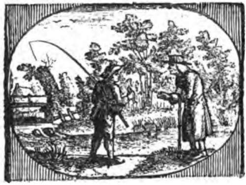
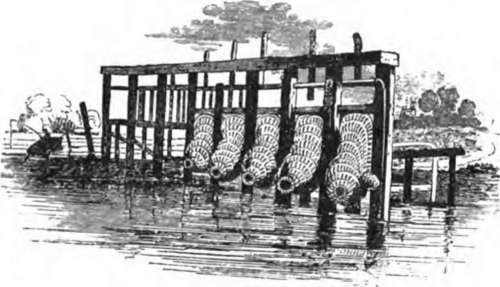

Chapter XXII. Angling For Eels
Description
This section is from the book "Fishing", by Horace G. Hutchinson. Also available from Amazon: Fishing.
Chapter XXII. Angling For Eels
In Shropshire and Herefordshire, when the Onny and the Lugg were coloured after a storm, I have had many a good day's sport fishing with wasp grub or worm for eels, although I confess I have never got over a certain amount of aversion to handling the slimy snake-like fish, but I always looked upon the capture of an eel as so many trout saved. Since the earliest records and descriptions of fish the eel has been one of the greatest of mysteries. The eel has roe and milt and spawns in the sea. When the eggs are hatched the fry join in a great and curious pilgrimage which takes them in countless myriads into the rivers, which they ascend to the very spring-heads, hundreds of miles perhaps away from their birthplace. Into every lake or pond from which a stream flows they will find their way; the only thing which prevents them, is water so poisoned that they cannot live in it. In the Thames, the migration of the elvers, or young eels, used to be called "eel-fare," and the people collected them by the bushel to cook.
In their way inland they follow the course of the stream along the sides and surmount every obstacle to their progress, such as weirs and dams, as long as there is any trace of water flowing over them. In this way our inland waters are stocked with eels. In some rivers the army of elvers takes weeks to pass one place on a river. Max von dem Borne says that in the river Arno in Italy three million pounds weight of these young eels from one to three or four inches in length have been taken in a few hours. Eels grow very rapidly in fresh water, and every year great numbers of those which have been in fresh water for about five years drop down the rivers to the sea, to spawn. The seawards wandering begins the earlier in the year the farther the fish are from the sea, and continues at intervals until October and November, the chief migration being in the autumn, when tons of eels are caught in the wire eel-traps at weirs. They run chiefly at night, and in stormy, thundery weather. The eel grows to a large size and weight in fresh water, passing the winter in a torpid state buried in the mud, when they are often speared in great numbers. All through the summer they feed voraciously on spawn, fry, larvae of insects, and, in fact, on everything that they can swallow in the nature of food. The best bait on a night line for eels is a loach, bullhead, minnow, or other small fish, and it is astounding what a large fish a 2-lb. eel will dispose of. That eels will leave the water at night and cross over wet grass to other waters, and feed on snails and worms in the grass, is firmly believed by many people. I see nothing impossible in this, but I have never met an eel on land (except when stranded after a flood), although I have often walked at night along the wet grassy banks of rivers with plenty of eels in them. I fancy they are too intent on catching fish and other food under water to bother about hunting for snails and worms on land. It is interesting to walk along the course of a small stream and note the blow-holes of the eels. If you look carefully on the mud a foot under water, you may see a little round hole like a miniature crater with slightly raised sides-it is the breathing-hole of an eel, and with a properly made three- or four-bladed eel-spear an expert can generally secure the fish by a well-directed thrust into the mud. In the holes of the stonework of a weir, eels will feed all day in the clearest water and hottest weather. The bait, generally a lob-worm, is gently pushed into the opening of a dark little cavern between the stones, in a second it disappears-so quickly that you rarely see the eel's head darted out and withdrawn. The only chance to get him out is to keep a strong steady pull on him. Eels are very fond of crayfish, and attack them when they are changing their shells, and are soft and defenceless. In some waters crayfish have been exterminated in this way. It is supposed that eels, after their return to the sea, never reascend them, and only breed once. The eels which are usually sold in the fish market rarely exceed 4 or 5 lbs. in weight; but they have been caught in fresh water three, and even four times that weight. The differences noticed in river eels, such as sharp nose, broad nose, yellow belly, silver belly, etc, are said to be merely "local" and "age" differences-eels from a clear gravelly river being lighter in colour and more silvery than those from muddy rivers. Trout, pike, and others are very fond of eels. I was spinning for a pike in a stream when I saw one with an eel in its mouth, held as a dog holds a stick, in the middle. I drew my spinner so that it hooked the eel, and the pike hung on until close to the bank before he would leave go.
Gudgeon, Bleak, Minnows, Bullheads, Loach, Etc
The small fry of our rivers are interesting to the angler chiefly as bait for other fish. They are, of course, of great importance as food for fish, and I have no doubt in time our fish-breeders will find that it will pay them to breed and rear them for the purpose of providing food for trout. The breeding of natural food for trout has been strangely neglected, and this is the reason why in so many waters-especially in artificial lakes and reservoirs- the attempts to stock with trout have been very successful at first, as long as there was any food; and then the fishing has fallen off, and the trout caught are what anglers call all heads and tails. I think there is no doubt in time we shall cultivate all kinds of natural food for trout on a very much larger scale than is the case at present.

Continue to: